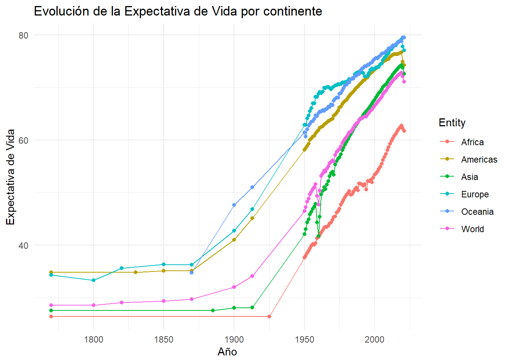
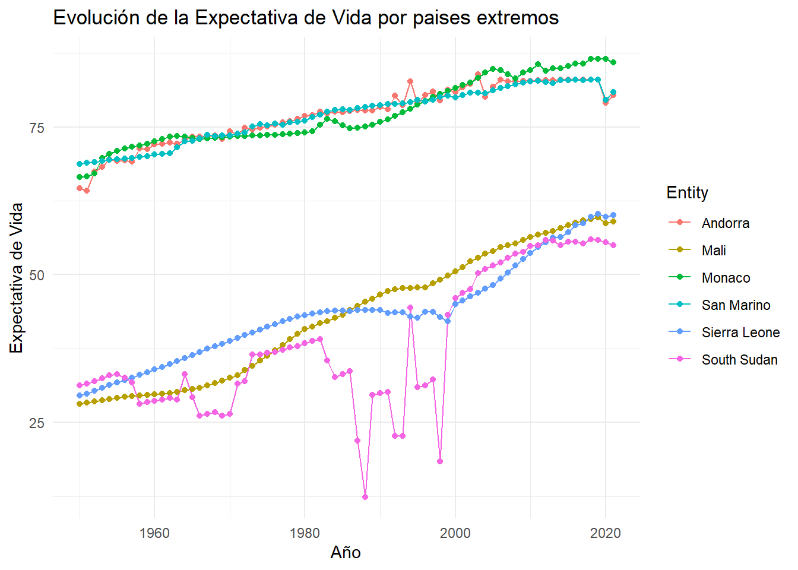

# Instalar y cargar las librerias
# install.packages(c("tidytuesdayR", "DBI", "RSQLite","tidyverse","summarytools","datos","shiny"))
library(tidytuesdayR)
library(DBI)
library(RSQLite)
library(summarytools)
library(tidyverse)
library(datos)
library(shiny)
library(tinytex)LifeExpectancy
Life Expectancy
El siguiente código toma un dataset provisto por Tidy Tuesday que brinda información sobre la expectativa de vida anual de cada pais e intenta responder las siguientes preguntas:
1- Cuáles son los 3 paises que en promedio tuvieron mayor/menor expectativa de vida cada año?
2- Cuáles son los paises que lideraron en cada año con mayor/menor expectativa de vida?
# Descargar los datasets
tuesdata <- tidytuesdayR::tt_load("2023-12-05")
life_expectancy <- tuesdata$life_expectancy
life_expectancy_different_ages <- tuesdata$life_expectancy_different_ages
# life_expectancy_female_male <- tuesdata$life_expectancy_female_male # Crear una conexión ficticia a una base de datos ficticia
con <- dbConnect(RSQLite::SQLite(), dbname = ":memory:")# Crear tablas e insertar los datasets
dbWriteTable(con, "life", life_expectancy)
dbWriteTable(con, "life_ages", life_expectancy_different_ages)
# dbWriteTable(con, "life_sex", life_expectancy_female_male)Expectativa de vida por continente
# Consultar datos desde la tabla life
Continents <- dbGetQuery(con, "
SELECT *
FROM life
WHERE Entity='Americas'
OR Entity='Africa'
OR Entity='Asia'
OR Entity='Europe'
OR Entity='Oceania'
OR Entity='World'
")# Graficar las expectativas de vida por continente
ggplot(Continents, aes(x = Year, y = LifeExpectancy, color = Entity, label = Entity)) +
geom_line() +
geom_point() +
labs(title = "Evolución de la Expectativa de Vida por continente",
x = "Año",
y = "Expectativa de Vida") +
theme_minimal()
Expectativa de vida por nivel de ingresos
# Consultar datos desde la tabla life
Income <- dbGetQuery(con, "
SELECT *
FROM life
WHERE Entity='Low-income countries'
OR Entity='Lower-middle-income countries'
OR Entity='Middle-income countries'
OR Entity='Upper-middle-income countries'
OR Entity='High-income countries'
")# Graficar las expectativas de vida por nivel de ingresos
ggplot(Income, aes(x = Year, y = LifeExpectancy, color = Entity, label = Entity)) +
geom_line() +
geom_point() +
labs(title = "Evolución de la Expectativa de Vida por nivel de ingresos",
x = "Año",
y = "Expectativa de Vida") +
theme_minimal()
Expectativa de vida por nivel de desarrollo
# Consultar datos desde la tabla life
Development <- dbGetQuery(con, "
SELECT *
FROM life
WHERE Entity='Less developed regions'
OR Entity='Less developed regions, excluding China'
OR Entity='Less developed regions, excluding least developed countries'
OR Entity='More developed regions'
OR Entity='Small Island Developing States (SIDS)'
")# Graficar las expectativas de vida por nivel de ingresos
ggplot(Development, aes(x = Year, y = LifeExpectancy, color = Entity, label = Entity)) +
geom_line() +
geom_point() +
labs(title = "Evolución de la Expectativa de Vida por nivel de desarrollo",
x = "Año",
y = "Expectativa de Vida") +
theme_minimal()
Paises extremos
Paises extremos son los 3 paises que en promedio tuvieron mayor/menor expectativa de vida cada año.
# Filtrar datos a partir de 1950 hasta 2019
data <- life_expectancy %>% filter(Year >= 1950 & Year <= 2019,
!grepl("develop", Entity, ignore.case = TRUE))dbWriteTable(con, "data", data)# Consulta para obtener los 3 países con mayor LifeExpectancy en promedio
query_top_countries <- "
SELECT Entity, AVG(LifeExpectancy) AS AvgLifeExpectancy
FROM data
GROUP BY Entity
ORDER BY AvgLifeExpectancy DESC
LIMIT 3
"# Consulta para obtener los 3 países con menor LifeExpectancy en promedio
query_bottom_countries <- "
SELECT Entity, AVG(LifeExpectancy) AS AvgLifeExpectancy
FROM data
GROUP BY Entity
ORDER BY AvgLifeExpectancy ASC
LIMIT 3
"# Ejecutar las consultas y guardar los resultados en dataframes
top_countries <- dbGetQuery(con, query_top_countries)
bottom_countries <- dbGetQuery(con, query_bottom_countries)# Mostrar los resultados
print("Países con mayor LifeExpectancy en promedio:")
print(top_countries)
print("Países con menor LifeExpectancy en promedio:")
print(bottom_countries)# Consultar datos desde la tabla life
Extremos <- dbGetQuery(con, "SELECT * FROM life WHERE Entity='Monaco' OR Entity='Andorra' OR Entity='San Marino' OR Entity='South Sudan' OR Entity='Mali' OR Entity='Sierra Leone'")extremos <- Extremos %>%
filter(Year >= 1950)
# Graficar las expectativas de vida por paises extremos
ggplot(extremos, aes(x = Year, y = LifeExpectancy, color = Entity, label = Entity)) +
geom_line() +
geom_point() +
labs(title = "Evolución de la Expectativa de Vida por paises extremos",
x = "Año",
y = "Expectativa de Vida") +
theme_minimal()
Expectativa de vida segun edad
A continuacion se compara la expectativa de vida al nacer versus la expectativa de vida al tener 80 años.
dbWriteTable(con, "extremos", extremos)# Realizar el JOIN
result_join <- dbGetQuery(con, "
SELECT LE.*, LDA.LifeExpectancy80
FROM extremos LE
INNER JOIN life_ages LDA
ON LE.Entity = LDA.Entity AND LE.Year = LDA.Year
")result_window <- dbGetQuery(con, "
SELECT Entity, Year, LifeExpectancy, LifeExpectancy80,
LifeExpectancy80 - LifeExpectancy AS DiffLifeExpectancy
FROM (
SELECT LE.Entity, LE.Year, LE.LifeExpectancy, LDA.LifeExpectancy80,
ROW_NUMBER() OVER (PARTITION BY LE.Entity, LE.Year) AS row_num
FROM extremos LE
INNER JOIN life_ages LDA
ON LE.Entity = LDA.Entity AND LE.Year = LDA.Year
) AS subquery
WHERE row_num = 1
")
# print(result_window)# Graficar las expectativas de vida srgun edad por paises extremos
ggplot(result_window, aes(x = Year, y = DiffLifeExpectancy, color = Entity, label = Entity)) +
geom_line() +
geom_point() +
labs(title = "Diferencia de la Expectativa de Vida segun edad por paises extremos",
x = "Año",
y = "Expectativa de Vida") +
theme_minimal()
Mejor performance
Cual fue el pais que tuvo mejor evolucion de su expectativa de vida?
Common Table Expression (CTE) - RankedLifeExpectancy se obtienen los siguientes datos de data:
Mediante la funcion de ventana LAG() se obtiene PrevYearLifeExpectancy, particionando los datos por Entity.
La diferencia entre el año actual y el anterior es ChangeInLifeExpectancy.
Consulta principal: Selecciona el MaxIncreaseInLifeExpectancy de RankedLifeExpectancy.
Ejecución y resultado: Se obtien un ranking de los paises con mayor crecimiento de expectativa de vida en su año record.
best_year <- dbGetQuery(con, "
WITH RankedLifeExpectancy AS (
SELECT
Entity,
Year,
LifeExpectancy,
LAG(LifeExpectancy) OVER (PARTITION BY Entity ORDER BY Year) AS PrevYearLifeExpectancy,
LifeExpectancy - LAG(LifeExpectancy) OVER (PARTITION BY Entity ORDER BY Year) AS ChangeInLifeExpectancy
FROM
data
)
SELECT
Entity,
Year as BestYear,
MAX(ChangeInLifeExpectancy) AS MaxIncrease
FROM
RankedLifeExpectancy
GROUP BY
Entity
ORDER BY
MaxIncrease DESC
LIMIT 10;
")
print(best_year) Entity BestYear MaxIncrease
1 Rwanda 1995 25.8707
2 Lebanon 1977 25.5465
3 South Sudan 1999 24.8376
4 Bangladesh 1972 23.5946
5 Somalia 1993 23.3369
6 Palestine 1974 23.2408
7 Cambodia 1977 16.8974
8 Bosnia and Herzegovina 1994 15.6905
9 Haiti 2011 15.6042
10 Cyprus 1975 15.2879